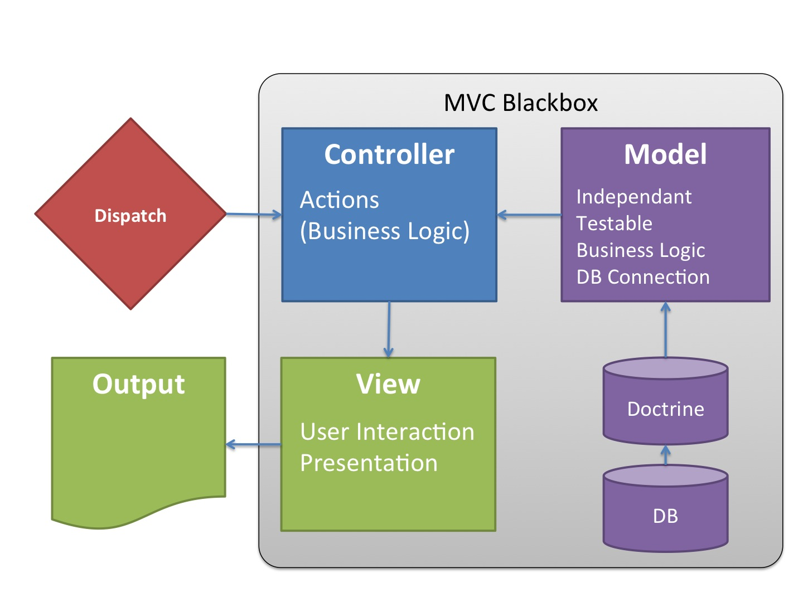

Presenters
- Ekke is a consultant with deep knowledge in eZ Publish 4 and 5, eZ Find / Apache Solr and with a faible for coming cutting edge web technologies. He is one of the organizers of the PHP Unconference since eight years.
- Martin is TODO
-
Donat is owner of Webmanufaktur, a full service web agency in Switzerland. He works as projects manager, software architect and developer and likes thinking outside of the box. In the last year he has been involved in major pure eZ 5 projects.
-
Members of CJW Network
Multiple Colors of Migration
- There are still many eZ Publish legacy sites
- eZ Publish 5.4 / 2014.11 is supported until May 2019
- So there is a stable business base for the next 4 years
- And since one year in internet is seven years in real live, 28 years of best business!
-
Why waiting? OK, we try to help you with arguments and know how
-
https://github.com/cjw-network/cjw-summercamp-slides/blob/master/Multiple-Colors-of-Migration.pdf
Who is in the audience?
Let us know you better ...
- Who is coming from the eZ World?
- Who is coming from the Symfony World?
- Who has realized eZ Publish 5 sites (productive)?
- Who has realized pure eZ Publish 5 sites (no legacy)?
TODO Agenda
Things we would like to discuss:
- Reasons for not waiting any more
- Run legacy only
- Run Symfony only
- Multi-Site/Multi-Repository Setup
Why waiting?
Financial reasons - How to sell it to your customer?
- update / upgrade - but still no new feature for editors
- many security fixes - but often part of maintenance support
-
new feature mobile editing - too long to wait for: in eZ Platform 6
-
Relaunch: Make responsive, look at http://getbootstrap.com or http://foundation.zurb.com/
- Relaunch: Mobile first, it is coming to marketing people
- Do you have one more?
Why waiting?
Technical reasons for starting now
- it is on the upgrade path to eZ Plattform 6
- many security and bug fixes
- TWIG for new templates and fallback to old templates when needed
- easy to extend with Symfony bundles, there are more than 2500 on e.g. http://knpbundles.com/
- switch to responsive web design and make it mobile first
Which version to use?
We need a version as a stable base for the next 4 years
- eZ Publish 5.3 / 5.4 aka 2014.11 is supported until May 2019
- but many fixes are in the legacy bridge
- but newer versions are pre alpha
- but there is no real save version to switch
- solution take our cjwpublish and help to keep it fresh
Which version to use?
We need a version as a stable base for the next 4 years
- eZ Publish 5.3 / 5.4 aka 2014.11 is supported until May 2019
- but many fixes are in the legacy bridge
- but newer versions are pre alpha
- but there is no real save version to switch
- solution take our cjwpublish and help to keep it fresh
Run legacy only
eZ Publish Legacy
We need a version as a stable base for the next 4 years
- eZ Publish 5.3 / 5.4 aka 2014.11 is supported until May 2019
- but many fixes are in the legacy bridge
- but newer versions are pre alpha
- but there is no real save version to switch
- solution take our cjwpublish and help to keep it fresh
Run Symfony only
title: Team up with a Symfony Crack build_lists: true
- To be honest: as eZ 4 developers, we are complete novices in eZ 5
- It's easier for a Smyfony Crack to learn eZ than other way round
- Symfony community is hungry for a CMS, so watch out for new competition
- But @Symfony cracks: It's not easy: an eZ Publish and CMS expert will reduce your risk
- And will make your content architecture better and more maintainable
Think in MVC
- A radical different thinking
- eZ 4 mangled all together in the TPL -> the view implemented the logic (fetch)
- Symfony enforces a clean separation, from routing to the controller to the rendering of the view
MVC Blackbox

Think in Bundles
What is a bundle?
- Use a least one bundle per site
- Split your application in different bundles (site specific, functional, ...)
- Reuse your code: create and maintain with love a Base Bundle with general functions
-
Refactor it frequently as you learn and the product evolves
-
Creating bundles is easy, don't work in the DemoBundle ;-)
-
$ php ezpublish/console generate:bundle
Organize your config files
The standard eZ installation is a mess...
... and the DemoBundle is only slowly becoming a source of good practice
How do YOU handle this?
- keep config in
ezpublish/configas general as possible - it should merely describe your environment, not the application
- move all site/function specific settings to the bundle
Keep ezpublish.yml small (1)
ezpublish/config/ezpublish.yml
imports:
- {resource: "@CjwExampleBundle/Resources/config/ezpublish.yml"}
ezpublish:
siteaccess:
default_siteaccess:%cjw.site%_user
list:
groups:
default_group:
match:
\Cjw\MultiSiteBundle\Matcher\MapHost:
www.%cjw.site%.ch: %cjw.site%_user
admin.%cjw.site%.ch: %cjw.site%_admin
repositories:
default_repository:
engine: legacy
connection: default_connection
Keep ezpublish.yml small (2)
system:
default_group:
repository: default_repository
var_dir: var/%cjw.site%
languages:
- ger-DE
%cjw.site%_user:
legacy_mode: false
languages:
- ger-DE
content:
view_cache: true
ttl_cache: true
default_ttl: 3600
%cjw.site%_admin:
legacy_mode: true
...
stash:
...
Keep ezpublish.yml small (3)
Can even be shorter - get inspiration from https://github.com/lolautruche/metalfrance
Extras:
- use parameters
- standardize site access names, groups, repository names
ezpublish/config/parameters.yml
parameters:
...
cjw.site: frb
Note: prepending configuration does not work well with parameters
Config Files in Bundle
We keep them in a separate directory and name them as in good old eZ...
ExampleBundle
⌞ Resources
⌞ config
⌞ ezpublish
image.yml
override.yml
ezpublish.yml <-- includes files from ./ezpublish
parameters.yml
routing.yml
services.yml
Controllers
After several tries, we ended up with...
- Basically one controller per full view
- Separate controllers for navigation etc.
-
Consider caching (TTL, X-Location Header)
-
Recommended: Move business logic to separate model
- Retrieve all needed data (location, children, ...)
- Prepare the data for easy processing in the templates
Ways to Fetch Content
- LocationService::loadLocation( $id ) --> location
-
ContentService::loadContent( $id ) --> content
-
SearchService::findContent( $query ) --> list of content
-
SearchService::findLocations( $query ) --> list of location
-
LocationService::loadLocationChildren( $location ) --> list of location
-
Legacy fetch functions
SearchService::findContent()
The only SearchService function you will find in DemoBundle ...
- returns full
contentobjects with ALL attributes in ALL languages - does not work
wellwith multiple locations -
no
as_objectsflag as in eZ 4 -
scales very badly
- fetching a content tree with 116 locations took 30 seconds
- most of the time is spent in manipulating the SQL result in PHP
-
Another test: 24 hits, PHP array 44'880 rows with 39 elements each, highly redundant
-
http://share.ez.no/blogs/donat-fritschy/searchservice-performance
SearchService::findLocations()
Available from 2014.05 / 5.3 only
Roughly equivalent to good old fetch( 'content', 'list' )
- returns
locationobjects withcontentInfoonly - usually sufficient for building a menu
- use
ContentService::loadContent()to fetch whole object - Performance lower than legacy, but acceptable
- fetching a content tree with 116 locations took < 1 second
- scales very well
LocationService::loadLocationChildren()
Think of LocationService::loadLocationChildren() as primarily intended for administration interface. Has no filtering capabilities.
Further reading:
http://www.netgenlabs.com/Blog/Fetching-content-in-eZ-Publish-5-using-Search-service
Legacy Fetch Functions
use eZFunctionHandler;
...
$mySearchResults = $this->getLegacyKernel()->runCallback(
function () use ( $searchPhrase, $sort, $contentTypeIdenfiers )
{
// eZFunctionHandler::execute is the equivalent for a legacy template fetch function
// The following is the same than fetch( 'ezfind', 'search', hash(...) )
return eZFunctionHandler::execute(
'ezfind',
'search',
array(
'query' => $searchPhrase,
'sort_by' => $sort,
'class_id' => $contentTypeIdenfiers
)
);
}
);
Templates
How to transform a full view TPL with children to Symfony?
full/folder.tpl
<h1>{$node.data_map.title.content|wash()}</h1>
{attribute_view_gui attribute=$node.data_map.short_description}
...
{def $list_items=fetch( 'content', 'list', ... ) ) }
{foreach $list_items as $child}
{node_view_gui view=line content_node=$child}
{/foreach}
Moving to TWIG
Resources/view/full.html.twig
<h1>{{ ez_render_field( content, 'title') }}</h1>
{{ ez_render_field( content, 'short_description') }}
...
{{ render( controller( "CjwBaseBundle:Default:subItems", {'locationId': location.id }) ) }}
Controller/DefaultController.php
public function subItemsAction( $locationId )
{
$response = new Response;
$locationList = $this->fetchLocationListIncludingContentTypes( $locationId, array() );
return $this->render(
"CjwBaseBundle::sub_items.html.twig",
array( "locationList" => $locationList ),
$response
);
}
Moving to TWIG
Resources/view/sub_items.html.twig
{% for location in locationList %}
{{ render( controller( 'ez_content:viewLocation',
{'locationId': location.id, 'viewType': 'line'} )) }}
{% endfor %}
Our approach
- Basically one template per full view
- Render children directly in the full view template
- Generalized full and line view templates for the easy stuff
How to organize Templates?
The Symfony way...
views
⌞ Customer
CustomerDetail.html.twig
⌞ Product
The classic eZ way...
views
⌞ full
customer.html.twig
⌞ line
Two approaches, both valid. Follow your taste.
eZ View Cache vs. HTTP Caching
eZ View Caching (Legacy)
When the pagelayout is rendered, the {$module_result.content} part will be replaced with the actual output. If view caching is enabled, the entire result of the module will be cached. This means that the contents of the "module_result" variable will be put into a cache file (...)
When a new version (...) of an object is published, the system will automatically clear the view cache for the following items:
- All published nodes of the object
- The parent nodes
- Related nodes (keywords, object relations)
https://doc.ez.no/eZ-Publish/Technical-manual/4.x/Features/View-caching
HTTP Expiration and Validation (Symfony)
The HTTP specification defines two caching models:
- With the expiration model, you simply specify how long a response should be considered "fresh" by including a Cache-Control and/or an Expires header. Caches that understand expiration will not make the same request until the cached version reaches its expiration time and becomes "stale";
- When pages are really dynamic (i.e. their representation changes often), the validation model is often necessary. With this model, the cache stores the response, but asks the server on each request whether or not the cached response is still valid. The application uses a unique response identifier (the Etag header) and/or a timestamp (the Last-Modified header) to check if the page has changed since being cached.
In Short (and much simplified...)
eZ View Cache caches content and content fragments
- Standard TTL is 2 hours
- Is purged on content modifications (with smart cache clearing rules)
Symfony's HTTP Cache caches requests
- eZ uses Expiration model by default
- Standard TTL is 60 seconds (86400 for tree menu!)
- Symfony Cache is purged from backend
Let's dive in a bit deeper...
ez 4 Cache Directives
Code from ezpublish_legacy/kernel/private/classes/ezpkernelweb.php
// send header information
foreach (
eZHTTPHeader::headerOverrideArray( $this->uri ) +
array(
'Expires' => 'Mon, 26 Jul 1997 05:00:00 GMT',
'Last-Modified' => gmdate( 'D, d M Y H:i:s' ) . ' GMT',
'Cache-Control' => 'no-cache, must-revalidate',
'Pragma' => 'no-cache',
...
) as $key => $value
)
{
header( $key . ': ' . $value );
}
This guarantees that every request is handled by eZ
eZ 5 Cache Directives
Code from vendor/ezsystems/demobundle/EzSystems/DemoBundle/Controller/DemoController.php
// Setting HTTP cache for the response to be public and with a TTL of 1 day. $response = new Response; $response->setPublic(); $response->setSharedMaxAge( 86400 ); // Menu will expire when top location cache expires. $response->headers->set( 'X-Location-Id', $rootLocationId ); // Menu might vary depending on user permissions, so make the cache vary on the user hash. $response->setVary( 'X-User-Hash' );
This effectively sets the Response free, out of the reach of eZ
Emulating eZ 4 Cache behaviour in eZ 5
This patch to index.php disables client and proxy caching without sacrificing the benefits of the Symfony HTTP cache. Use at own risk!
$response = $kernel->handle( $request ); // Emulate eZ 4 cache control $response->headers->set( 'Cache-Control', 'no-cache, must-revalidate' ); $response->send(); $kernel->terminate( $request, $response );
Cache Recommendations
- Read the specifications
- Use Shared Caches with caution
- Cave:
setTtl()vs.setClientTtl - Set TTL as high as possible
-
Use Varnish
- https://www.mnot.net/cache_docs/
Cache per User - User Hash Definer
src/Cjw/SiteCustomerBundle/Identity/UserHashDefiner.php
namespace Cjw\SiteCustomerBundle\Identity;
use eZ\Publish\SPI\User\IdentityAware;
use eZ\Publish\SPI\User\Identity;
use eZ\Publish\API\Repository\Repository;
class UserHashDefiner implements IdentityAware
{
private $repository;
public function __construct(Repository $repository)
{
$this->repository = $repository;
}
public function setIdentity(Identity $identity)
{
$current_user = $this->repository->getCurrentUser();
$identity->setInformation('UserID', $current_user->contentInfo->id);
}
}
Cache per User - yml config
src/Cjw/SiteCustomerBundle/Ressources/config/services.yml
parameters:
cjw_site_customer.user_hash_definer.class: Cjw\SiteCustomerBundle\Identity\UserHashDefiner
services:
cjw_site_customer.user_hash_definer:
class: %cjw_site_customer.user_hash_definer.class%
tags:
- { name: ezpublish.identity_definer }
arguments: [@ezpublish.api.repository]
Cache per User - Controller
src/Cjw/SiteCustomerBundle/Controller/CjwController.php
public function sectionInternalAction($locationId, $viewType, $layout = false, array $params = array())
{
$response = new Response();
$response->setPrivate();
$response->headers->set('X-Location-Id', $locationId);
$response->setVary('X-User-Hash');
return $response;
}
Cache per User - Location View Configuration
src/Cjw/SiteCustomerBundle/Ressources/config/ezpublish/override.yml
system:
customer_user_de:
location_view:
full:
section_internal:
controller: "CjwSiteCustomerBundle:Cjw:sectionInternal"
match:
Identifier\Section: internal
title: Multi-Site/Multi-Repository Setup subtitle: class: segue dark nobackground
Why a Multi-Site/Multi-Repository Setup?
- At CJW Network we have developed a multi-site/multi-repository setup for eZ Publish 4 several years ago
- This allows us to host many individual sites on a single eZ Publish installation
Advantages:
- Central site administration (site activation, cronjobs, ...)
- Easy deployment (update site extension with Subversion)
- Highly reduced maintenance costs (security patches, upgrades)
- Highly efficient use of hardware resources
Disadvantages:
- Some Kernel patches needed
Multi-Site/Multi-Repository Setup in eZ 5
First Approach (proven in production and depreciated)
- Use different ezpublish app directories to host the different sites
Second approach (proven in production)
- Use TODO ab hier bitte überarbeiten:
CJW MultiSiteBundle
Introducing CJW MultiSiteBundle
Although the first approach works fine, it has several drawbacks:
- Application code scattered at different places (site directory, bundle, legacy extension), hard to maintain in VCS, hard to deploy
- Redundancy in config files
- No global settings
-
No central site activation/administration
-
Goal: keep everything in one place!
CJW MultiSiteBundle Features
- Boots kernel and environment based on domain name mappings
- Handles local, staging and live domain names
- Allows for global activation of bundles
- Allows for global settings
- Provides a common console for all sites
- Caches domain name mappings
- Moves cache and log files away from the ezpublish folder
- more to come ...
cjwpublish Directory
The cjwpublish application directory sits next to the ezpublish directory.
cjwpublish
⌞ config
cjwpublish.yml <-- defines active bundles
config.yml <-- allows for global settings
CjwPublishKernel.php <-- inherits from CjwMultiSiteKernel.php
CjwPublishCache.php <-- inherits from CjwMultiSiteCache.php
console
Symfony's app directory is back
Site Bundle Directory Layout
src
⌞ Cjw
⌞ SiteExampleBundle
⌞ app
⌞ config
cjwpublish.yml <-- contains domain mappings
config.yml
ezpublish.yml
...
CjwSiteExampleKernel.php <-- inherits from CjwPublishKernel.php
CjwSiteExampleCache.php <-- inherits from CjwPublishCache.php
⌞ Controller
...
Caveats
Adjustments needed in config.yml to reflect different relative location of kernel
assetic:
...
read_from: %kernel.root_dir%/../../../../web
write_to: %kernel.root_dir%/../../../../web
...
ez_publish_legacy:
...
root_dir: %kernel.root_dir%/../../../../ezpublish_legacy
parameters:
ezpublish.kernel.root_dir: %kernel.root_dir%/../../../../vendor/ezsystems/ezpublish-kernel
More problems of this kind expected!
Project Status TODO
- Currently in private Beta, not yet released
- Ideas and Feedback welcome
-
Public Beta in October
- https://github.com/cjw-network/MultiSiteBundle
Ressources
Slides as PDF
Slides (Source)
CJW MultiSiteBundle TODO link to cjwpublish
http://vote.netgenlabs.com/
Please Vote!
<Thank You!>
Ekkehard Dörre
http://share.ez.no/community/profile/7431
@ekkeD
http://www.coolscreen.de
Donat Fritschy
https://github.com/dfritschy
http://share.ez.no/community/profile/10451
@webmanufaktur
http://www.webmanufaktur.ch